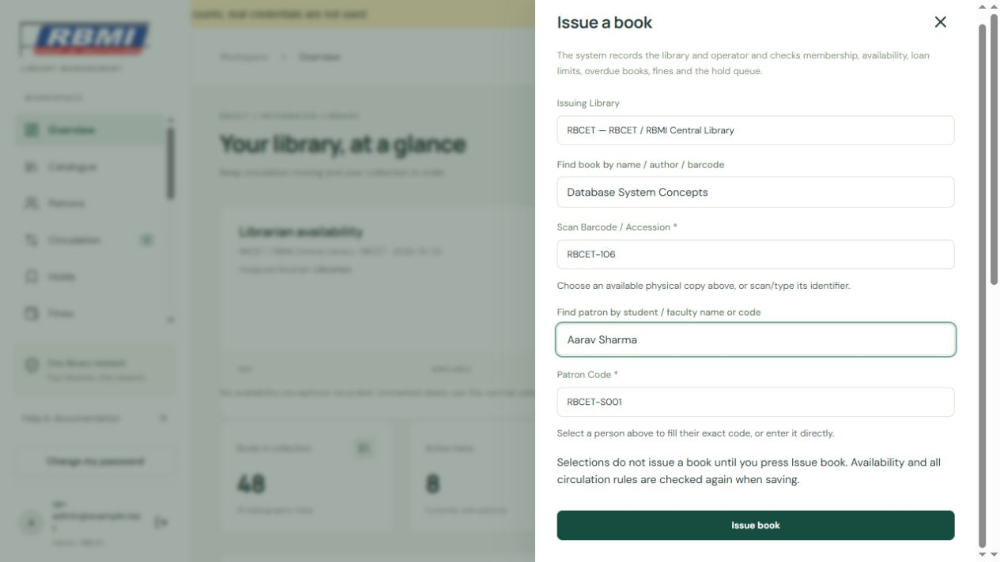
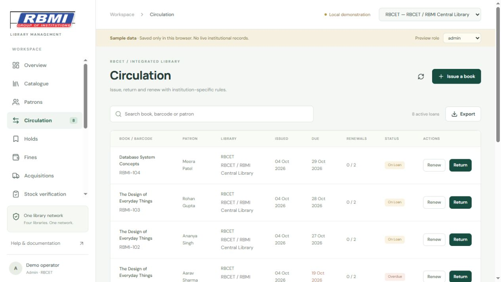
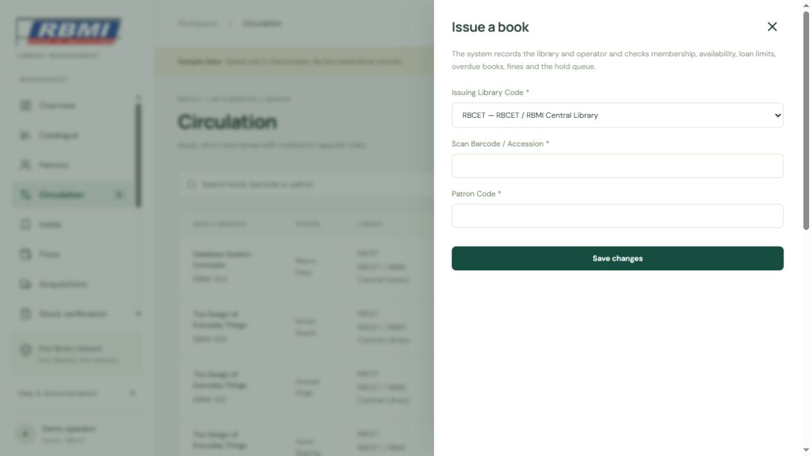
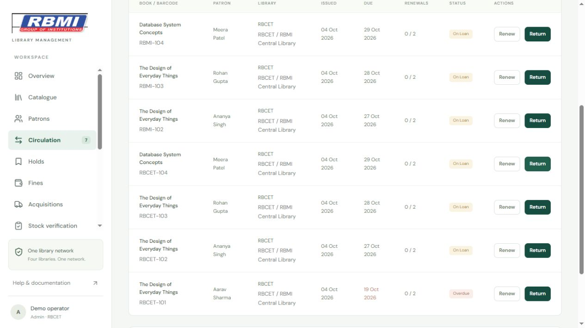
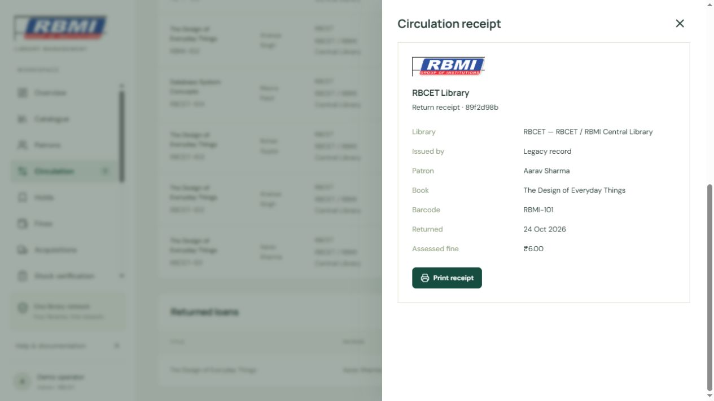

Issues store the library code/name, operator UUID and issuer name snapshot, timestamp, barcode/accession, title and patron code snapshots. A book must return to its issuing library.
How to use this section
Choose the correct library and click Issue a book. Verify the library code. Type at least two letters in Find book to see only available copies in this library; choose the exact barcode/accession. Type a student or faculty name in Find patron and choose the person to fill their patron code. You can also scan/type the barcode and enter the patron code directly. Use Arrow Up/Down and Enter to choose suggestions, or click a result.
Press Issue book. Selecting suggestions alone does not issue a book. The server checks copy availability, membership/expiry, loan limits, overdue loans, balance threshold and FIFO hold priority. Due dates follow the library calendar.
Open Circulation and locate the active loan by book, barcode or patron. Verify the library column and due date.
Use Renew only when permitted. Overdue loans, exhausted renewals, waiting holds, inactive memberships and excessive balances block renewal.
Use Return in the same library. The server rejects another issuing library code even for admin. Return, fine posting and copy availability commit together.
Inspect the return notice and assessed fine. Set Loan status to Returned loans, choose Receipt and print its library, patron, book and fine details.
Active and returned loan lists use database pages of 50 records. Search matches the full list. Use Previous / Next to navigate; overview statistics count all records even when only a preview is loaded.
Smart issue suggestions
Sample records: selecting a book copy and patron fills the barcode and patron code. Only copies marked available in the selected library appear.

Issue autocomplete with synthetic sample records.
Notes and limits
Each loan stores its policy values. Later policy edits apply to new loans; existing issues retain their recorded rules.
Do not repeat a successful return. The database rejects returns on a loan already closed.
Date filters and exports
Open Circulation. Search using a title, accession, barcode, borrower name or patron code. Matching ignores uppercase and lowercase differences.
Choose Issued date, Returned date or Due date, then select an On date value. For example, Returned date and 2026-10-27 shows books returned that day.
Choose All loans, Active loans or Returned loans. Use All dates to remove the date filter.
Export Excel creates a real .xlsx workbook. Export PDF creates a printable PDF. Both exports contain every matching record, including records on later pages. The export limit is 50,000 records; narrow the filters if a report exceeds it.
Issue search explicitly accepts accession numbers. A one-character accession can be matched exactly; longer identifiers support partial suggestions. Stored identifiers keep their original spelling. If case-insensitive lookup matches more than one copy, choose the exact physical copy from the suggestions.
Screen guide
Captured from the application with sample records. Screen values are examples; your records and permissions may differ.

Screen 1. Active loans show patron, accession, due date and actions. Check the issuing library before issue or return.

Screen 2. Scan the copy barcode/accession and enter the patron code. The issuing library is shown and recorded.

Screen 3. After a sample overdue return, the notice shows the fine assessed and the loan moves to Returned loans.

Screen 4. Open Receipt for a returned loan. Verify patron, book, library and fine, then use Print receipt if needed.